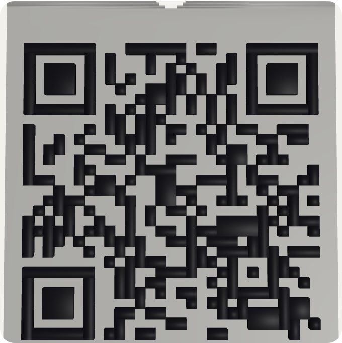
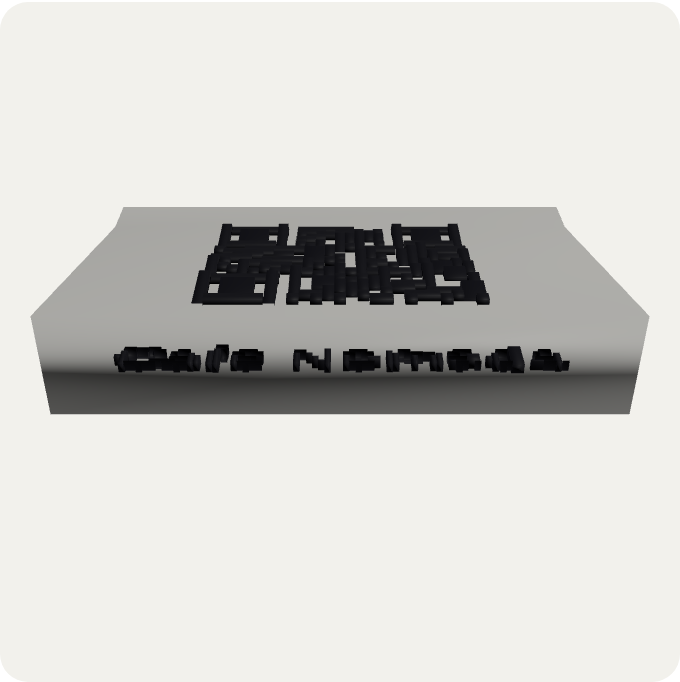
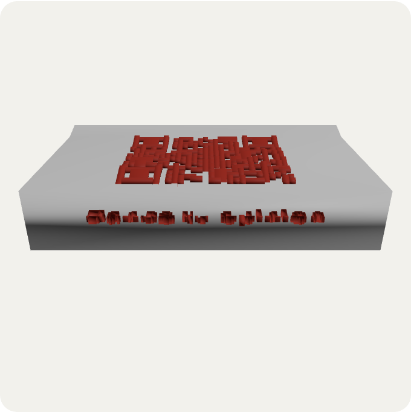

Instagram and social
A QR code to your profile on the table, storefront or business card to grow local followers.
Design your custom QR code for free — no signup — and download it as a two-color 3D object: table stand, keychain, or wall plaque, ready for your printer. Prefer a flat image? PNG and SVG downloads are one click away too.
Works with or without “https://” — we add it automatically.
🔒 100% private — your link and design are processed on your device, never uploaded to any server.
The same design, embossed, ready to print with two colors already assigned per piece.
Drag to rotate the piece · this is how it'll look printed
The 3MF file automatically assigns each piece to its color when you open it in Bambu Studio, PrusaSlicer or Orca. STL is the color-free fallback, for older printers or software.
🔒 The 3D files are generated in your browser — nothing is uploaded to any server.
Digital menu, Google review link, Instagram, your shop's WiFi, or your own website. Paste it and the QR code renders instantly — no signup.
Pick colors, the dot style, and add your logo or an emoji in the center. You'll see it update in real time.
Grab the PNG/SVG for on-screen use, or the 3D object — stand, keychain or plaque — ready for your printer, with the colors already assigned.
Most online QR code generators only give you a PNG image. QR3D Studio goes further: it turns your QR code into a real 3D object, with the pattern embossed and the colors already split by piece, so you can print it and place it wherever you need it — a restaurant table, the entrance of your rental property, or a keepsake keychain.
The main download is a two-color 3MF file: one color for the base, another for the raised QR code (and the text, if you add one). Modern slicers like Bambu Studio, PrusaSlicer, Orca Slicer or Cura read that file and assign each piece to its color automatically, with nothing to paint or configure by hand. If your printer or software is older, you can also download the model as STL, color-free, ready to paint or print in a single filament.
To make sure the result is actually scannable once printed, the tool calculates the size of each module and the contrast between your two colors live, and warns you if you need to enlarge the piece or shorten the link before printing.
New to the idea? Read more about what makes a QR code "3D", or about printing a QR code on paper vs. in 3D.
A table stand with your QR code: guests scan it and see the digital menu instantly, no paper involved.
Place the stand at the counter or on the table linking straight to "leave a review" — more reviews, less friction.
Weddings, fairs or conferences: a QR keychain linking to the schedule, the venue map, or the photo album, as a useful keepsake.
A wall plaque at the entrance of your Airbnb or guesthouse with the WiFi password — never dictate it out loud again.
A QR code to your profile on the table, storefront or business card to grow local followers.
Link to your online catalog, promotions, or contact form right from the counter.
Digital renders taken straight from the generator's own 3D viewer — not photos of physically printed pieces, just the same live preview you'll see while customizing your own QR code.

Keychain format, with the ring hole built in.
With the two mounting holes to hang it.

With the business name embossed.

Same format, different color and text.
No. Everything runs in your browser: paste your link, customize the QR code and download. No signup, no install, no usage limit.
Yes. The raised relief reproduces the exact same pattern as the on-screen QR code, with enough height (1–2 mm) for phones to read it without issue. The tool warns you if the contrast or module size aren't enough to scan reliably.
The 3MF file has both colors embedded: opening it in Bambu Studio, PrusaSlicer or Cura already assigns the base and the raised QR code to two separate colors, nothing to configure. STL carries no color — it's the fallback for older printers or software that don't support colored 3MF.
Yes, if your slicer supports manual filament changes or AMS/MMU. With a single-color printer you can print each piece of the 3MF separately, or print only the base color and hand-paint the raised part.
Bigger scans better: we recommend each QR module be at least 1.5 mm. The tool calculates this live based on the size you choose and warns you in red if it's too small.
Yes, but the shorter the link, the fewer modules the QR code needs, and the larger and more legible it prints. For the 3D object, shortening the link first is especially recommended.
No. The entire process — QR generation, design and 3D file creation — happens on your own device. We never send anything to a server.
Yes, they're standard FDM models that don't need print supports. The table stand has an angle designed to print support-free, the keychain includes the ring hole, and the wall plaque has two mounting holes.